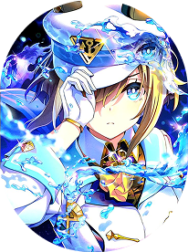

Застенчивая, но крайне целеустремленная девочка-лошадь. Находится в тени своих талантливых сестер, но неустанно трудится, чтобы доказать свою собственную силу на дистанции.
| Рост: | 160 см |
| Специализация: | Средние / Длинные дистанции |
| Стиль бега: | Загонщик (Between / Stalker) |
| Характер: | Скромный, тихий, упорный |
Чиби-стикер

Карта поддержки